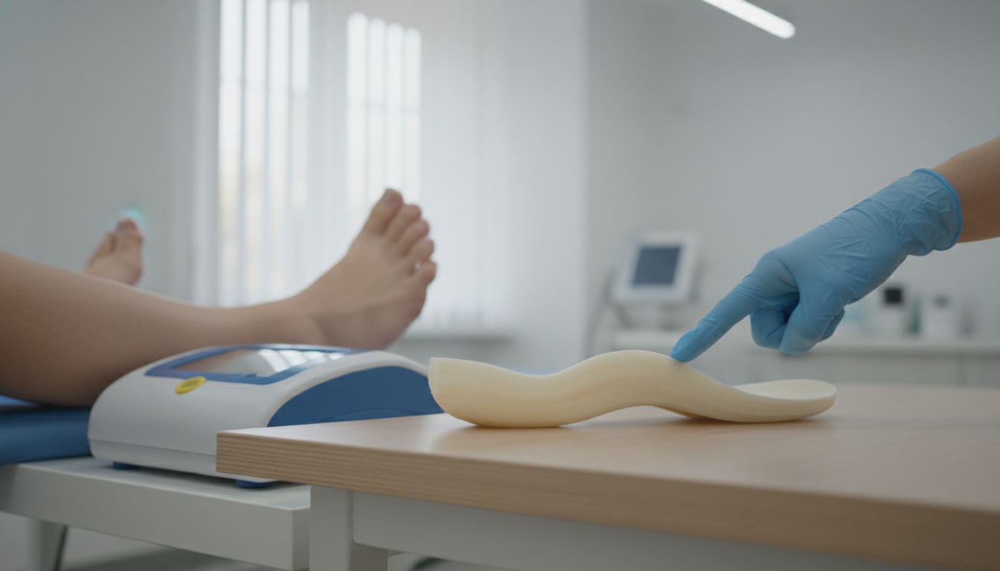

Understand How You Move — and Move Better
Foot pain, poor alignment or discomfort when walking can affect your whole body. My gait analysis and PHITS 3D printed orthotics service is designed around you.

Issues at the Feet Travel Up the Body
Issues with the way you move can contribute to ongoing problems in the ankles, knees, hips and even the lower back. My orthotics and gait analysis service is designed to understand how you move and provide a personalised solution that supports your body more effectively.
Orthotics are not a standalone solution. Where appropriate, I combine them with physiotherapy, strengthening exercises and advice to achieve the best long-term results.
Book an AssessmentA Detailed Look at How You Walk and Move
Gait analysis looks at how you walk and move. Using a detailed assessment and foot scan, I identify imbalances, pressure points and movement patterns that may be contributing to pain or injury — building a clear picture of what your body needs rather than relying on a one-size-fits-all approach.
Custom-Made Insoles Designed for You
I use advanced PHITS 3D Printed Orthotics to create fully customised insoles designed specifically for your feet and your movement.
Individually Designed
From your foot scan and gait assessment — never off-the-shelf.
3D Printed Precision
3D printed for precision and comfort, with a quality of fit that conventional insoles can't match.
Lightweight & Durable
Tailored to your activity level — robust enough for daily use but unobtrusive in your shoes.
Supports Natural Movement
Made to support natural movement — not restrict it. Your body still does the work; the orthotics just guide it.
Conditions Custom Orthotics May Support
By improving how your foot interacts with the ground, orthotics can reduce strain on the rest of your body.
- Foot pain (e.g. plantar fasciitis)
- Knee pain linked to alignment
- Shin splints and overuse injuries
- Hip or lower back discomfort
- Sports-related injuries
- General fatigue or discomfort when walking or standing
A Thorough but Relaxed Assessment
If orthotics are recommended, they'll be fully customised to you and your lifestyle.
- Detailed discussion about your symptoms and goals
- Movement and walking assessment
- Foot scan to analyse pressure and structure
- Clear explanation of findings
- Personalised recommendations, including whether orthotics are appropriate
Pricing
Gait Analysis — £90. PHITS Custom Made 3D Printed Orthotics — £285. All assessments delivered in your home.
View Full Fees